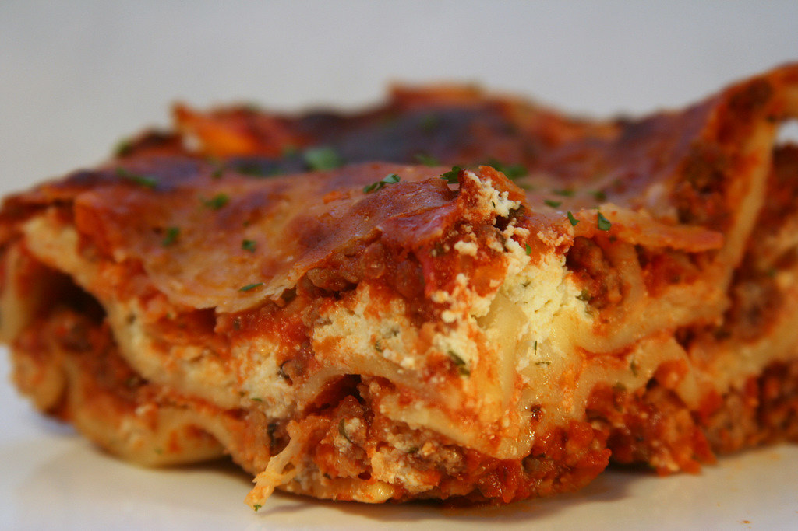

Home

Beef Lasagna
Ingredients list:
- 12 whole wheat lasagna noodles
- 1 pound lean ground beef
- 2 cloves garlic, chopped
- 1 teaspoon dried oregano, or to taste
- 1/2 teaspoon garlic powder
- salt and ground black pepper to taste
- 16 ounce shredded Parmesan cheese
- 2 eggs
- 4 1/2 cups tomato-basil pasta sauce
- 2 cups shredded mozzarella cheese
Directions:
- Preheat overn to 175 degrees celcius
- Bring a large pot of lightly salted water to a boil. Add lasagna noodles and cook for 10 minutes or until al dante; drain
- Meanwhile, place ground beef, garlic, oregano, garlic powder, salt, and black pepper in a large skillet over medium heat; cook and stir until beef is crumbly and evenly browned, about 10 minutes.
To be continued...